Introduction to Natural Building
INT-781 / Costa Rica / Spring 2025
This field-based course examined how locally available materials, climate, and craft shape natural building systems. Through site observation and hands-on work, the study moved between bamboo structure, earth and straw mixtures, plaster assemblies, foundations, and passive strategies suited to a tropical environment.

Field Study
Learning from Place
Construction tours and collaborative workshops connect tropical ecology with bamboo framing, earthen wall systems, aggregate preparation, and tactile material knowledge.
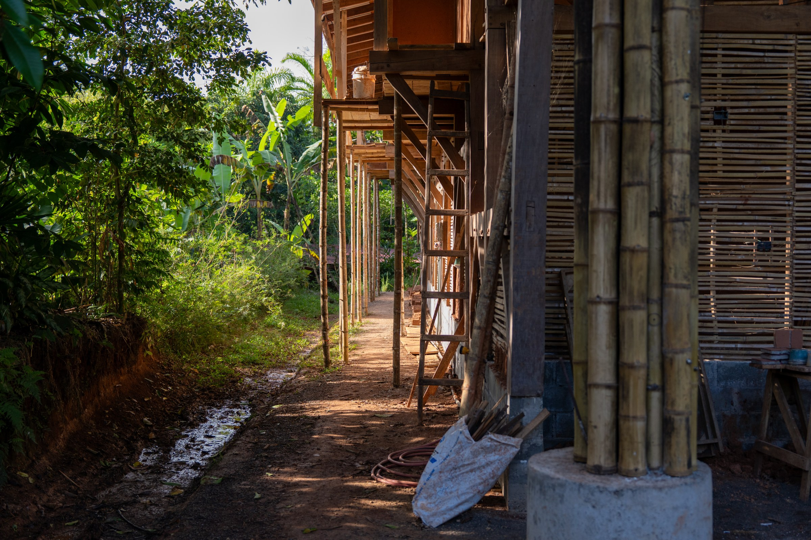
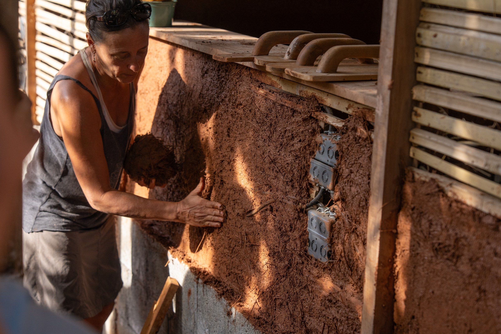
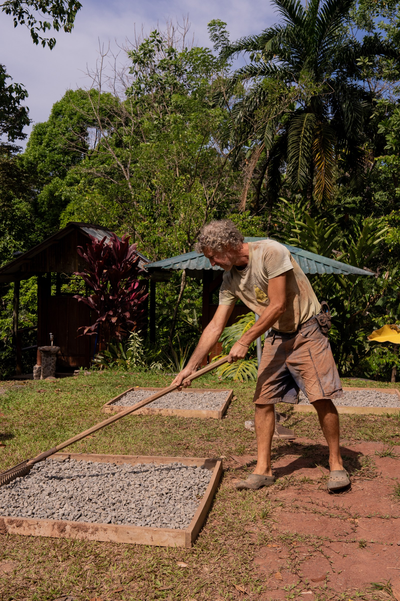
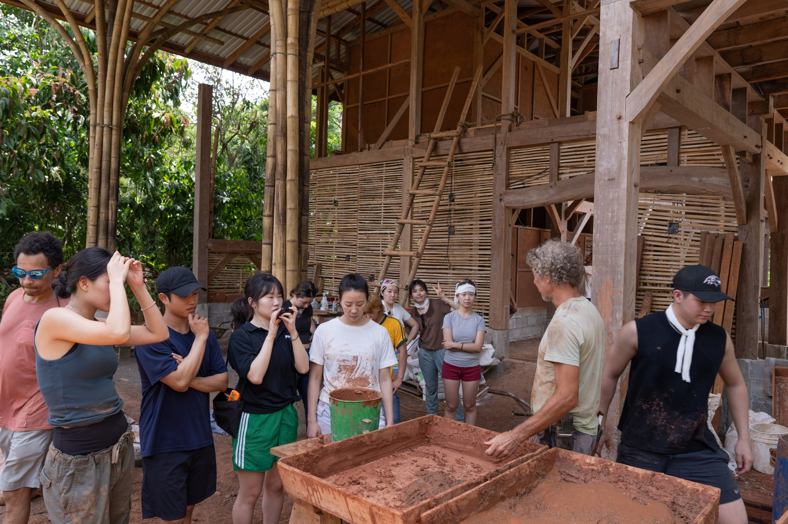
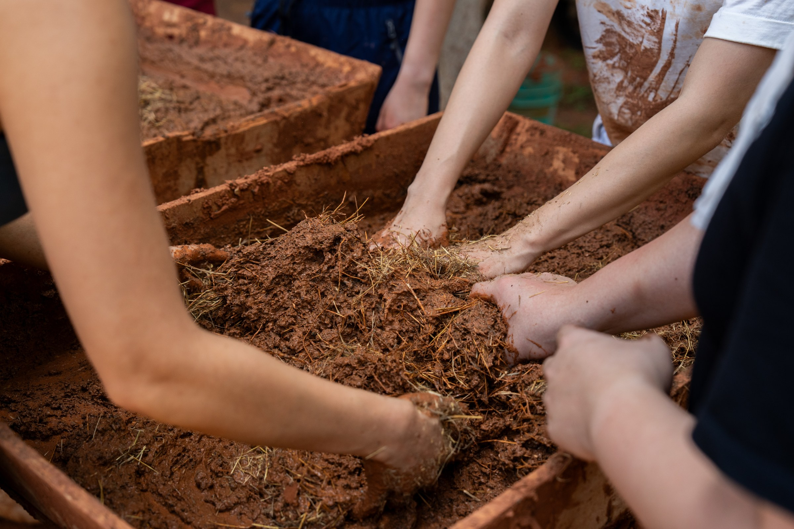
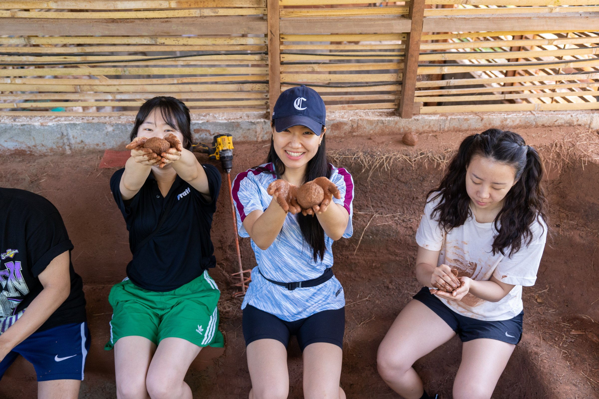
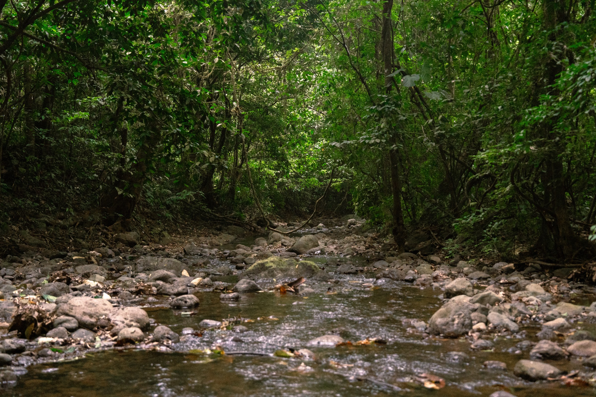
Course Notes
Materials & Assemblies
Lecture notes and mix studies document structural timber, foundations, moisture protection, lime and earth plasters, earthen floors, and changing ratios of clay, aggregate, and straw.
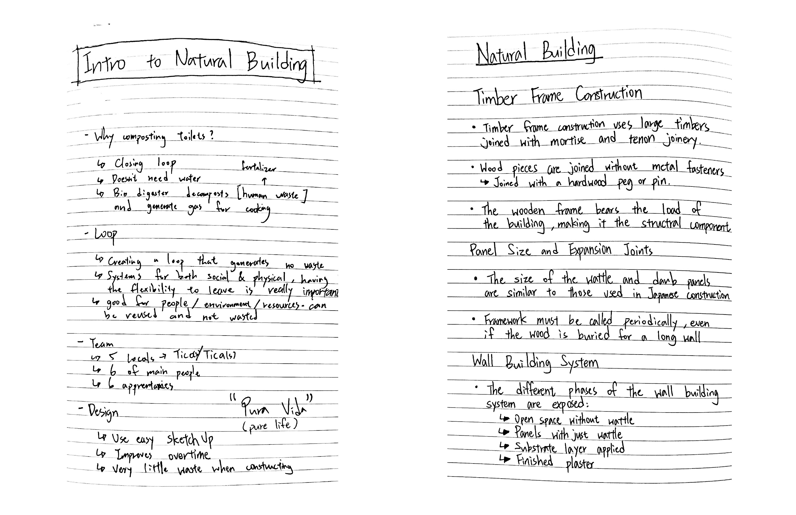
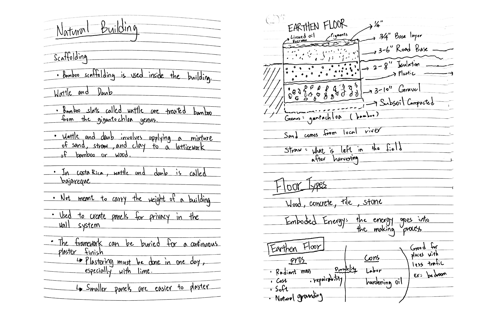
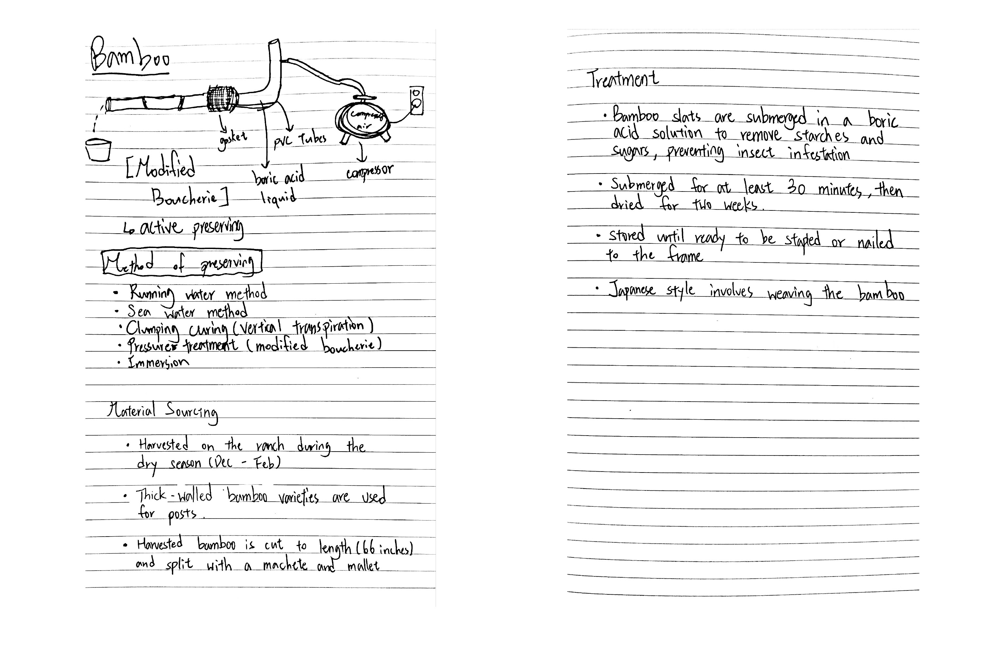
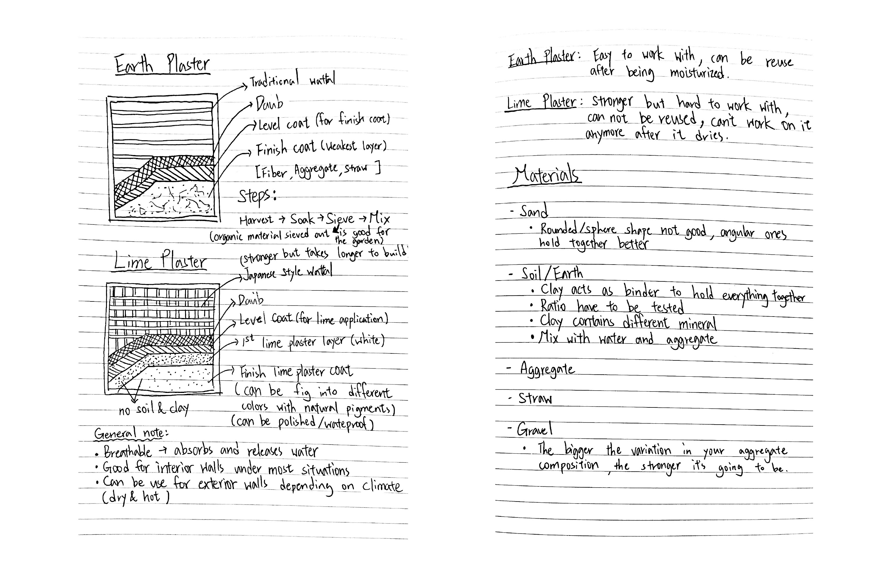
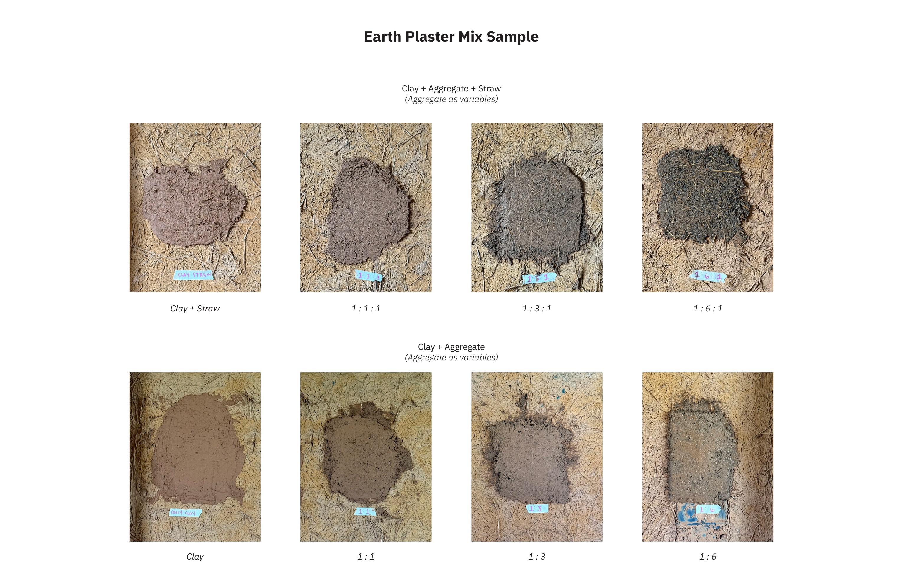
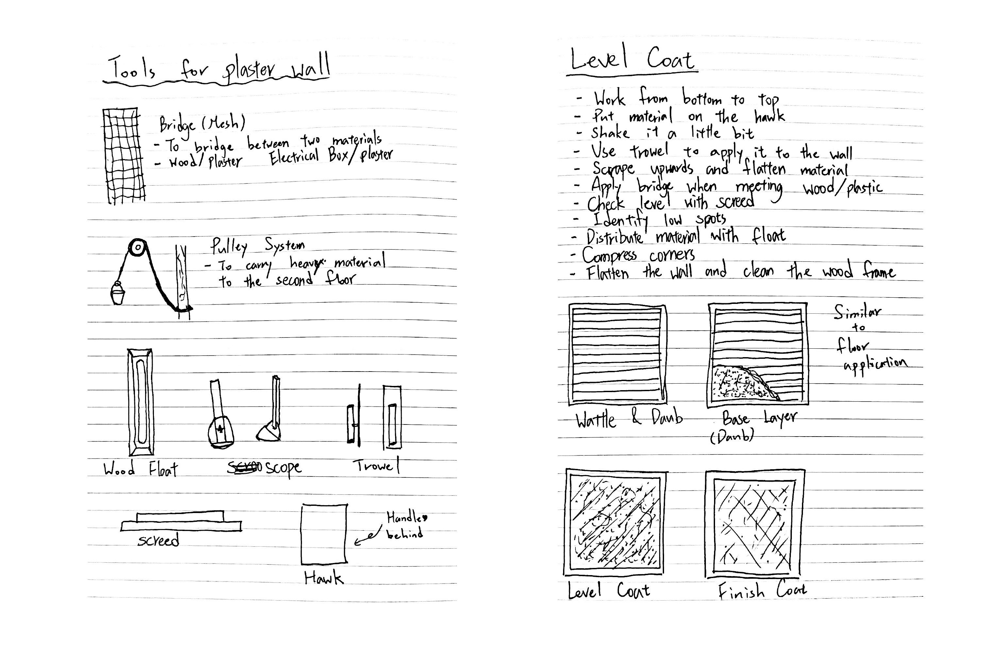
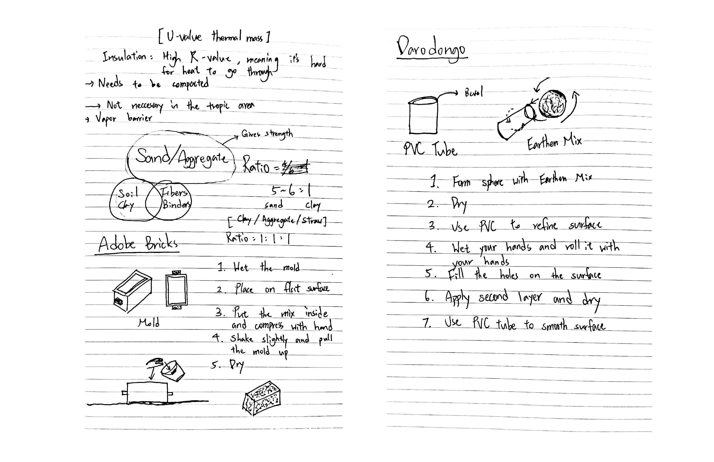
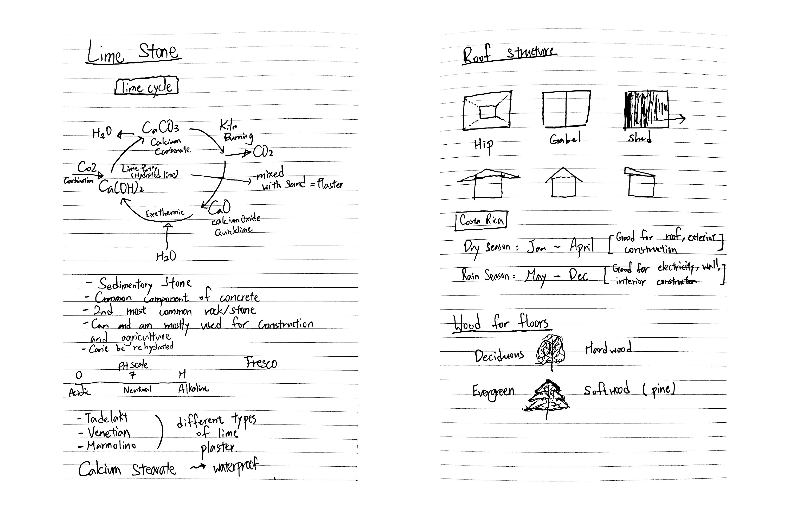